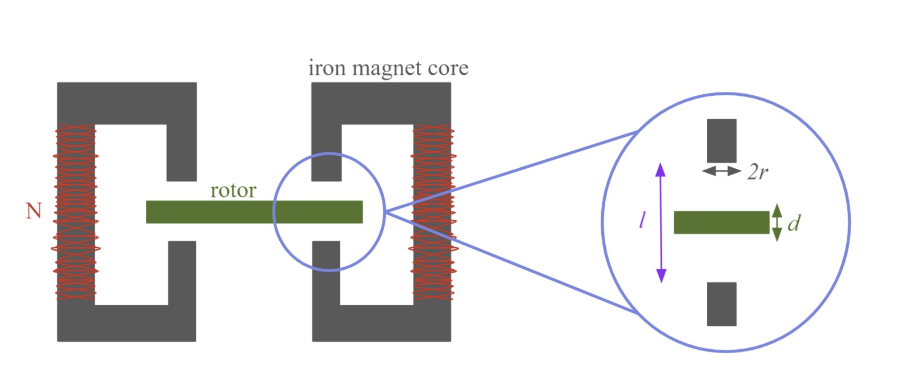

In my time on Cornell Electric Vehicles, I learned a lot (the hard way) about selecting the right motors. I wanted a way to test our motor's efficiency and encourage more testing of motors in the future.
For this project, I was able to utilize design fundamentals, but also refresh my knowlegde of electricity and magnetism as well as do design optimization though MATLAB
Ultimately, this project won the 2024 Frank O. Ellendwood Prize for a senior project related to energy and power!
I researched three main types of dynamometers: a motor-driven dynamometer, a mechanical brake dynamometer, and lastly an Eddy Current dynamometer. I settled on an electromagnetic system because it was the most variable to use in testing motors aside from what we used on CEV. The braking force from the dynamometer could be controlled using electricity, which I felt would be easier to apply to different motors long-term, while also allowing me to explore an interest in magnets.
Eddy currents are closed loop currents which circulate within conductor materials in response to changing magnetic fields. The direction of the induced current will oppose that of the change in flux which caused it. I used this to design an electromagnetic break which would oppose the rotation of the motor- the power dissipated in the process could then be used to track motor efficiency depending on output. Starting with Ampere's law, I was able to correlate eddy current forces and braking torque, the ultimate desired output.
I used Matlab calculations to decide what sized rotor and stator to use in order to get the max braking torque desired to match the current CEV motor. To vary the applied force, only the applied electricity would need to be changed, which could be done with a power supply.
 Individual Dynamometer MagnetUnfortunately, I did not have the funds to be able to prorotype and eventually utilize this design. However, the entire proposed design is outlined in the report below.